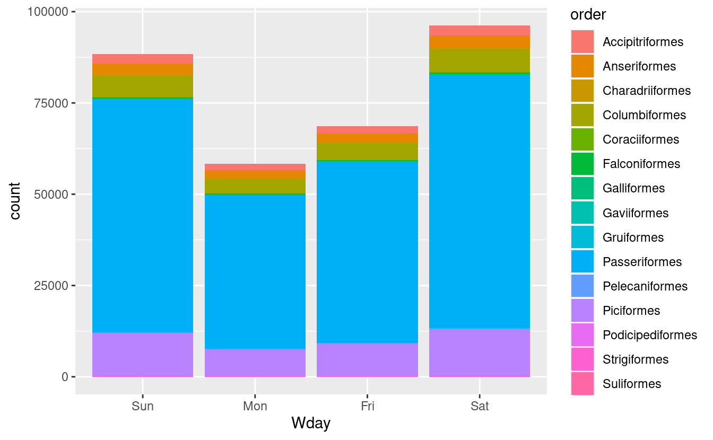

Session 16: lubridate
Working with dates and times in R.
 Artwork by @allison_horst
Artwork by @allison_horst
New to Code Club?
-
If you didn’t already do this, please follow the Code Club Computer Setup instructions, which also has pointers for if you’re new to R or RStudio.
-
If you’re able to do so, please open RStudio a bit before Code Club starts – and in case you run into issues, please join the Zoom call early and we’ll help you troubleshoot.
1. Getting set up
R has a range of functions that allow you to work with dates and times. However, today we will discuss how to work with dates and times in R using the package “lubridate”.
While lubridate is tidyverse-style, it is not part of the core tidyverse, so we need to install it.
We are also going to use the bird data that was first discussed in Code Club session 1, and we will need to download that.
# If needed, install the lubridate package:
# install.packages("lubridate")
# Load the tidyverse and lubridate:
library(tidyverse)
library(lubridate)
# Create a dir for our bird data ("recursive" to create two levels at once):
dir.create("data/birds/", recursive = TRUE)
# The URL to our file:
birds_file_url <- "https://raw.githubusercontent.com/biodash/biodash.github.io/master/assets/data/birds/backyard-birds_Ohio.tsv"
# The path to the file that we want to download the data to:
birds_file <- "data/birds/backyard-birds_Ohio.tsv"
# Download:
download.file(url = birds_file_url, destfile = birds_file)
# Read the data:
birds <- read_tsv(file = birds_file)
2. What is lubridate?
lubridate provides tools that make it easier to parse and manipulate dates.
We will discuss the common use of lubridate under the following themes:
-
Parsing dates
-
Manipulating dates
a) Instants: Rounding dates, time zones
b) Time spans: Durations, periods, intervals
3. Parsing dates
lubridate’s parsing functions read strings into R as “date-time” objects. Year is represented by y, month by m, and day by d.
Strings can be parsed using the following functions: dmy(), myd(), ymd(), ydm(), dym(), mdy(), ymd_hms().
Let us look at some examples
# parsing by year, month, day
ymd(20170131)
#> [1] "2017-01-31"
# parsing by month, day, year
mdy("December 1st, 2020")
#> [1] "2020-12-01"
# parsing by day, month, year
dmy("01-Dec-2020")
#> [1] "2020-12-01"
dmy("01/Dec/2020")
#> [1] "2020-12-01"
dmy("01Dec2020")
#> [1] "2020-12-01"
# parsing by year, month, day, hour, minutes, and seconds
ymd_hms("2020-01-31 20:11:59")
#> [1] "2020-01-31 20:11:59 UTC"
4. Manipulating dates: Instants
lubridate distinguishes between moments in time (instants) and spans of time (time spans).
Instants are specific moments of time. They are a combination of measurements on different units (i.e, years, months, days, etc.).
The individual values for now() and today() units can be extracted from an instant and set with the accessor functions second(), minute(), hour(), day(), yday(), mday(), wday(), week(), month(), and year().
Let us look at some examples
# Find the current system date using function today ()
today()
#> [1] "2021-03-31"
# Find the current system time using function now ()
Now <- now()
Now
#> [1] "2021-03-31 17:26:48 EDT"
# Extract the day of the month from an object Now using function mday ()
mday(Now)
#> [1] 31
# Extract the day of the week from an object Now using function wday()
wday(Now)
#> [1] 4
# Extract the week of the year from an object Now using function week ()
week(Now)
#> [1] 13
# Extract the month from an object Now using function month ()
month(Now)
#> [1] 3
# Extract the year from an object Now using function year ()
year(Now)
#> [1] 2021
Rounding instants
Instants can be rounded to a convenient unit using the functions ceiling_date(), floor_date(), and round_date().
-
ceiling_date()takes a date-time object and rounds it up to the nearest boundary of the specified time unit. -
round_date()takes a date-time object and time unit, and rounds it to the nearest value of the specified time unit. -
floor_date()takes a date-time object and rounds it down to the nearest boundary of the specified time unit.
Let us look at some examples
ceiling_date(Now, unit = "minute")
#> [1] "2021-03-31 17:27:00 EDT"
round_date(Now, unit = "minute")
#> [1] "2021-03-31 17:27:00 EDT"
floor_date(Now, unit = "minute")
#> [1] "2021-03-31 17:26:00 EDT"
Time zones
Naming time zones is challenging because everyday names of time zones tend to be ambiguous. For example, USA has EST, or Eastern Standard Time. However, both Australia and Canada also have EST!
To avoid confusion, R uses the international standard IANA time zones. These use a consistent naming scheme “/”, typically in the form <continent>/<city> (there are a few exceptions because not every country lies on a continent). Examples include America/New_York, Europe/Paris, and Pacific/Auckland.
Unless otherwise specified, lubridate always uses UTC. UTC (Coordinated Universal Time) is the standard time zone used by the scientific community and roughly equivalent to its predecessor GMT (Greenwich Mean Time).
Example: ymd_hms("2021-03-27 11:54:54 EDT", tz="America/New_York")
4. Manipulating dates: Time spans
A timespan is a length of time that may or may not be connected to a particular instant. For example, two months is a timespan. lubridate has three timespan classes: Durations, Periods and Intervals.
Durations
Durations measure the exact amount of time that occurs between two instants.
Functions for working with durations include is.duration(), as.duration() and duration(). For specific lengths, dseconds(), dminutes(), dhours(), ddays(), dweeks() and dyears() convenient lengths.
Periods
Periods measure the change in clock time that occurs between two instants.
Functions for working with periods include is.period(), as.period() and period(). seconds(), minutes(), hours(), days(), weeks(), months() and years() quickly create periods of convenient lengths.
Intervals
Intervals are timespans that begin at a specific instant and end at a specific instant. Intervals retain complete information about a timespan. They provide the only reliable way to convert between periods and durations.
Functions for working with intervals include is.interval(), as.interval(), interval(), int_shift(), int_flip(), int_aligns(), int_overlaps().
Let us look at an example
# John was born on 19841014. How old is John
h_age <- today() - ymd(19841014)
h_age
#> Time difference of 13317 days
# Time difference in days
as.duration(h_age)
#> [1] "1150588800s (~36.46 years)"
5. Plotting the bird data
We will plot the bird data using ggplot2.
First, we plot a bar graph of days of the week:
birds %>%
mutate(Wday = wday(eventDate, label = TRUE)) %>%
ggplot(aes(x = Wday)) +
geom_bar()

Second, we’ll plot the relative relative abundance of different bird orders by day of the week:
birds %>%
mutate(Wday = wday(eventDate, label = TRUE)) %>%
ggplot(aes(x = Wday, fill = order)) +
geom_bar()

6. Breakout rooms!
Exercise 1
Jane was born on January 31st, 1992. How old is Jane today?
Hints (click here)
Use the functions today(), mdy(), and as.duration().
Solution (click here)
Jane_age <- today() - mdy("January 31st, 1992")
as.duration(Jane_age)
#> [1] "920332800s (~29.16 years)"
Exercise 2
Plot a horizontal bar chart of bird orders.
Hints (click here)
Use the coord_flip() function.
Solution (click here)
birds %>%
ggplot(aes(x = order)) +
geom_bar(fill = "#f68034", alpha = 0.6, width = 0.4) +
coord_flip()

Bonus exercise
Remove the order “Passeriformes” from the bird data, and plot relative abundance of order based on days of the week.
Hints (click here)
Use the functions filter() and mutate().